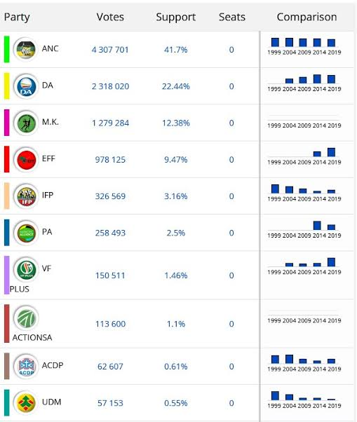

Voters in Ward 3 of the Siyancuma Local Municipality in Douglas, Northern Cape, will go back to the polls on Wednesday 18 November, after ballot papers were destroyed at a counting station before the count could be completed.
The Independent Electoral Commission (IEC) ordered the revote for the Bongani Community Hall voting district. A group of people allegedly forced their way into the station and destroyed more than 100 ballot papers, along with ballot boxes, voting booths, tables and chairs. It is so far the only revote the IEC has ordered after the 2026 local government elections.

Who can vote, and when
Only voters registered at the Bongani voting district may take part. The revote is not open to everyone in Ward 3 or in Douglas. The IEC says the voters’ roll certified and used on 4 November will be used again.
Special votes will be cast on Tuesday 17 November from 08:00 to 17:00, at the hall or through an approved home visit. Applications for special votes closed on Saturday 14 November.
The main revote takes place on Wednesday 18 November from 07:00 to 21:00 at the Bongani Community Hall.
“…fair and equal opportunity to exercise their democratic right to vote.” — IEC, on the purpose of the revote
Arrests and investigation
Eleven people, described as political party supporters, were arrested in connection with the incident and were due to appear in the Douglas Magistrates’ Court. The Hawks have confirmed that their criminal investigation is continuing.
The IEC held back the official results for Douglas after the incident. The outcome for the Bongani district will only be known once the revote is complete on Wednesday.